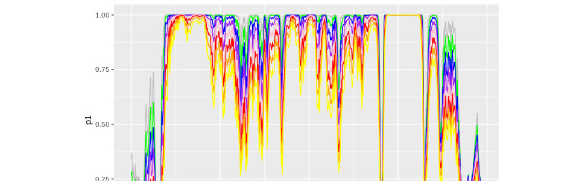
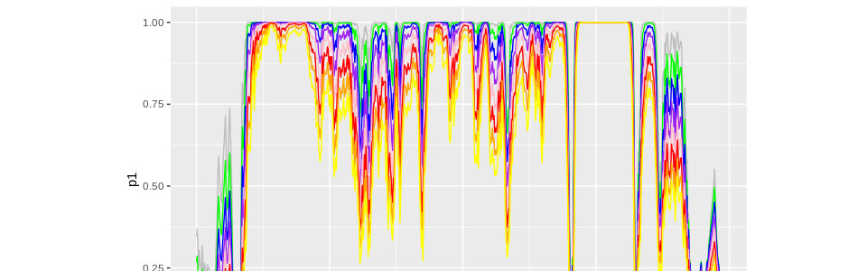

Journal articles and conference papers
Durbert A., Grollemund P.M., Lafourcade P., Atighehchi K., (2025) Accuracy Limits as a Barrier to Biometric System Security, CODASPY.
Chagnon D., Durbet A., Grollemund P.M., Atighehchi K. (2025) Exploit the Leak: Understanding Risks in Biometric Matchers, ICISSP.
Grollemund P.M., Poupet C., Comte E., Bonnet M., Veisseire P., Bornes S. (2024) A clustering-based survival comparison procedure designed to study the Caenorhabditis elegans Model, Scientific Reports. [pdf]
Lepoivre M., Laurent C., Martin B., Grollemund P.M., ..., Coppa M. (2024) Relationship between milk intrinsic quality scores and the environmental impact scores of dairy farms, Italian Journal of Animal Science.
Grollemund P.M., Lenoir L., Benoit J., Chassard C., Bord C. (2022) Permanova testing and Poisson Log-Normal modelling unravel how two traditional cheeses are distinguished through sorting and verbalization tasks, Food Quality and Preference. [pdf]
Durbet A., Grollemund P.M., Lafourcade P., Thiry-Atighehchi A. (2022) Near-collisions and their Impact on Biometric Security, Secrypt 2022. [pdf]
Durbet A., Grollemund P.M., Lafourcade P., Migdal D., Thiry-Atighehchi A. (2022) Authentication Attacks on Projection-based Cancelable Biometric Schemes, Secrypt 2022. [pdf]
Grollemund P.M., Lafourcade P., Thiry-Atighehchi K., Ticht A. (2020) Proof of Behavior, 2nd Tokenomics Conference on Blockchain Economics, Security and Protocols. [pdf]
Abraham C., Grollemund P.M. (2020) Posterior Concentration for a
Misspecified Bayesian Regression Model with Functional Covariates, Journal of Statistical Planning and Inference. [pdf]
Le Tacon F., Murat C., Gravier J., Montpied P., Dupouey J.L., Grollemund P.M., Baragatti M. (2019) Evolution of the Périgord black truffle (Tuber melanosporum Vittad.) production in the Vaucluse department (France) from 1903 to 1988. Influence of annual climatic variations and possible effects of climate changes or sociological factors, Mycorrhiza. [pdf]
Grollemund P.M., Abraham C., Pudlo P., Baragatti M. (2018) Bayesian Functional Linear Regression with Sparse Step Functions, Bayesian Analysis. [pdf][Supplementary Material] [software]
Conference resumes
Bonnet M., Poupet C., Diet A. Grollemund P.M., ..., Delbès C. (2025) Caenorhabditis elegans, un modèle utilisé pour le criblage de microbiotes fromagers à effet santé, CNRIUT. [poster]
Lepoivre M., Martin B., Grollemund P.M., ..., Chassard C. (2024) Relationship between milk intrinsic quality and the environmental impact of dairy farms, Mountain Livestock Farming Systems Meeting. [poster]
Bord C., ..., Grollemund P.M., Mardon J. (2024) Relevance of a modelling approach to monitor the sensory attributes of blue cheeses during ripening, WDS 2024. [poster]
Kioye T.J.Y., Grollemund P.M., et al. (2023) Sélection de variables à l’aide d’un critère d’information lissé dans un modèle poisson log-normal, Journées Maths Bio Santé 2023. [poster]
Kioye T.J.Y., Grollemund P.M., et al. (2023) Sélection de variables à l’aide d’un critère d’information lissé dans un modèle poisson log-normal, JdS 2023.
Bouhadjera F. Baragatti M., Grollemund P.M., et al. (2022) Bayesian functional linear regression estimation, Extension to scalar and categorical covariates, JdS 2022. [pdf]
Isman M.A., Yao A.F., Grollemund P.M., Ah Pine J. (2022) Modèle de régression et prévision de séries temporelles pour la demande en électricité à Djibouti, JdS 2022. [pdf]
Lepoivre M., Coppa M. Grollemund P.M., et al. (2022) Évaluation multicritère des fermes laitières selon la qualité physico-chimique de leur lait estimé par spectroscopie et leurs impacts environnementaux estimés par CAP2ER, J3R 2022. [pdf]
Grollemund P.M., Ratmann O., Herbeck J., et al. (2019) Preliminary report of high rates of external (non-Domestic) infection sources for newly HIV-1 diagnosed heterosexual men and women in Seattle and King County, USA, HIV D&E 2019. [Poster] [Abstract]
Grollemund P.M., Abraham C., Baragatti M. (2018) Bayesian Linear Regression on Function Data, ISBA 2018. [Poster]
Grollemund P.M., Abraham C. (2018) Posterior Consistency for Bayesian Functional Linear Regression using Wald Approach, JdS 2018. [pdf]
Grollemund P.M., Abraham C., Baragatti M. (2017) Bayesian approach using expert’s opinion. JdS 2017. [pdf]
Grollemund P.M., Abraham C., Baragatti M., Pudlo (2015) Interpretable Bayesian Functional Linear Regression, JdS 2015. [pdf]
Submitted papers
Kioye T.J.K., Grollemund P.M., et al. (2024) Sparse inference in Poisson log-normal model by approximating the L0-norm, Journal of Multivariate Analysis.
Atighehchi K., Durbet A., Grollemund P.M. (2022) Untargeted Near-collision Attacks in Biometric Recognition, Symposium on Applied Computing 2023.
Grollemund P.M., Abraham C., Baragatti M. (2019) Bayesian Approach using Expert’s Opinion: Impact of Rainfall on Production of Périgord Black Truffles. [pdf]
Works in progress
Isman M.A., Yao A.F., Grollemund P.M., Ah Pine J. (2023) Time series forecasting for Djibouti electricity demand
Bord C., Theil S., Grollemund P.M., ..., Chassard C., Delbès C. (2022) Raw milk farm-specific traits outweigh the levelling effects of commercial lactic starter on the microbiological and sensory characteristics of uncooked pressed cheeses
Grollemund P.M., Tordoff D., Hall M., Kerani R., Herbeck J., Ratmann O. (2019) A Bayesian non-parametric approach to estimate the proportion of external introductions of HIV in local populations with viral sequence data.
Fundings
Bourse de stage de M2, IUT Clermont Auvergne, 2024 et 2025 4k€ chaque année, principal investigator.
CAP 20-25 Programme DATA, 2024, PhD grant,to fund an MSc internship then a PhD student, participant with Chalouhb G. and Puys M.
Impulsion VetAgroSup, Santé Globale 2023 8k€, participant with Mardon J. (PI) and Bord C.
Plan de relance, ANR (2021-2022) 160k€, participant with Lafourcade P., David C. (PI) in order to work with 4.71 Company to supervise Eloise Yollande Mole Kamga.
CAP 20-25 (DATA Program and Centre International de Recherche sur les Agroécosystèmes durables) (2022-2025) two half-grants to fund a PhD student, principal investigator with Chassard C., Chauvet J. and Theil S.
DECLIC, INSMI (2021-2022) 15k€, principal investigator with Lafourcade P., Tichit A., Atighechi K. and Bu G.
ANR JCJC PRIVABIO (2020-2024) 160k€, participant with Atighehchi K. (PI) and Lafourcade P.
Emergence Program, CAP 20-25, I-Site Clermont Auvergne (2020-2021) 22k€, principal investigator with Bornes S., Druilhet P., Yao A.-F., Veisseire P. and Bonnet M.
Research supervisions
PhD students
Florent Durécu [Computer Science] (2024-..) Détection d'intrusions informatiques avec des outils d'IA (supervised with Chalhoub G. and Puys M.)
Kioye Togo Jean Yves [Statistics] (2022-..) Sélection de variables pour le modèle Poisson Log Normal. (supervised with Chassard C. and Chauvet J.)
Hawa Aden Farah [Statistics] (2022-..) Régression logistique bayésienne avec INLA (supervised with Druilhet P.)
Isman Mohamed Abdillahi [Statistics] (2022-2024) Evolution de la demande en électricité à Djibouti (supervised with Yao A.F. and Ah Pine J.)
Durbet Axel [Crypto-Biometric] (2021-2024) Biometric scheme analysis (supervised with Lafourcade P. and Thiry-Atighehchi K.)
Engineer
Mole Kamga Eloise Yollande with 4.71 (2022-2024) Automatisation du calcul du bilan carbone.
Vannaire Alexis with Monkey Factory (2022-2024) Analyse de réseaux de transports en commun.
Interships
Bourlioux Marie [M2 Statistics] (2025) Méthodes d'analyse de spectre pour l'identification de micro-organismes.
Remesha Guy Darcy [M2 Statistics] (2024) Etude du microbiote des jeunes ruminants : données de comptage multivariées et sélection de variables.
Yahiaoui Yacine [M2 Statistics] (2022) Détection de la comobilité.
Sarr Assane [M1 Statistics] (2022) Classification via Deep Learning et ajustement du niveau d'anonymisation.
Elissée Corentin [M1 Economics] (2021-2022) Blockchain, cryptomonnaie et monnaies locales (supervised with Lafourcade P. and Tichit A.)
Comte Elise [M2 Statistics] (2021) Modelization and identification impacts of cheese microorganisms on the nematode C. elegans. (works now at Montpellier CHU)
Vannaire Alexis [M2 Statistics] (2020-2021) GPS tracks analysis to detect eco-friendly behaviors (supervised with Lafourcade P. and Thiry-Atighehchi K.) (works now at Monkey Factory)
Durbet Axel [M2 Crypto-Biometric] (2021) Biometric scheme analysis (supervised with Lafourcade P., Migdal D. and Thiry-Atighehchi K.)
Doumbia Adama [M1 Statistics] (2021) Sorting analysis via a Rshiny App (supervised with Bord C.) (now : intership at Sanofi Paris)
Delavet Tiphaine [DUT2 STID] (2021) Facilitated data acquisition via a Rshiny App
Pousa Staklin Victor [DUT2 STID] (2021) Data augmentation for pose estimation
Brayat Amaury and Guibert Nathan [DUT2 STID] (2021) Data collection and GPS noise analysis
Le Hoang Cédric [M1 Computer Science] (2020) GPS tracks and HPC computation (supervised with Lafourcade P. and Thiry-Atighehchi K.)
Raynal Louis [M1 Statistics] (2015) The Bayesian Lasso (works now as statistician at CHD Vendée)
Oral presentations
IUT Symposium, June 21th-22th 2023, Aurillac (France)
Holoflux seminar, January 24th-25th 2023, Paris (France)
IUT Symposium, July 5th-6th 2022, Montluçon (France)
[Poster] Scientific day of DATA program, June 27th 2022, AgroParisTech, Aubière (France)
Statistics at the summit, March 24th 2022, Rochebrune (France)
AppliBUGS, June 13th 2019, Paris (France)
7th Annual Disease Modeling Symposium, April 24th 2019, Bellevue (Washington, US)
[Poster] HIV Dynamics & Evolution, March 24th 2019, Cascais (Portugal)
Team Seminar (IRHS), March 21th 2019, Angers (France)
Team Seminar (LJAD), March 19th 2019, Nice (France)
[Poster] Bayesian Statistics in the Big Data Era, November 27th 2018, CIRM at Marseille (France): Elicitation of Experts' Knowledge for FLR
Team Seminar (Imperial College London), October 12th 2018, London (UK): Bayesian Functional Linear Regression and Informative Prior
[Poster] 2018 ISBA World Meeting, June 24th 2018, Edinburgh (UK):
Elicitation of Experts' Knowledge for Functional Linear Regression
Workshop Miat-Mistea, June 5th 2018, Montpellier (France):
A review of Functional Linear Regression methods
50th Days of Statistics (SFdS), May 31th 2018, Saclay (France): Posterior Consistency of Bayesian Functional Linear Regression model
Seminar of Ph.D students (IMAG), May 16th 2018, Montpellier (France)
Team Seminar (IRMAR), April 6th 2018, Rennes (France)
RIS Network, March 27th 2018, Paris (France)
Team Seminar (LAREMA), March 26th 2018, Angers (France)
Team Seminar (IMAG), March 22th 2018, Grenoble (France)
Team Seminar (AgroParisTech), March 12th 2018, Paris (France)
Team Seminar (I2M) , March 5th 2018, Marseille (France)
Mexico Network (CIRAD), November 17th 2017, Montpellier (France): Bayesian Funtional Linear Regression and Support Detection
Seminar of Ph.D students (IMAG), October 11th 2017, Montpellier (France) : An example of posterior consistency
49th Days of Statistics (SFdS), June 2nd 2017, Avignon (France): Bayesian Functional Linear Regression with Informative Prior Distribution
Seminar of Ph.D students (IMAG), April 19th and 26th 2017, Montpellier (France): Informative Prior Distribution
Team Seminar (MISTEA), March 27th 2017, Montpellier (France)
Team seminar AgroParisTech, October 17th 2016, Paris (France)
"Journées Mathinfo", October 3rd-7th 2016, Mallemort (France)
Satellite CRoNoS Workshop on Functional Data Analysis, August 26th-28th 2016, Oviedo (Spain)
"Big data and Agriculture" Workshops, July 7th 2016, Montpellier (France): Regression for functional data: Application on truffles and rainfalls
Team Seminar (MIAT), January 22th 2016, Toulouse (France): The method BLiSS
47th Days of Statistics (SFdS), June 1st-5th 2015, Lille (France): Interpretable Bayesian Functional Linear Regression
Seminar of Ph.D students (I3M), May 6th 2015, Montpellier (France): About sparsity and functional data
Team Seminar (MISTEA), May 4th 2015, Montpellier (France): Interpretable Bayesian Functional Linear Regression
Workshops and conferences attended
55th Days of Statistics (SFdS), May 27th 2024, Bordeaux (France)
GT IA UCA, 2023, Clermont-Ferrand, France
StatLearn, 2023, Montpellier, France
Bayesian workshop (LMBP), 2022-2023, Clermont-Ferrand, France
[Remote] Statistiques aux sommets, March 22th - 24th 2021, Rochebrune, France
[Remote] AppliBugs, December 17th - 18th 2020, Paris, France
SMPGD, January 11th - 12th 2018, Montpellier, France
O-Bayes 2017, December 10th - 13th 2017, Austin Texas
48th Days of Statistics, May 30th - June 3rd 2016, Montpellier France
8emes Journées Statistiques du Sud Montpellier, May 28th and 29th 2016, Montpellier France
Workshop, April 5th 2016, Toulouse France : Hypothesis testing and mixtures
Thematic month - week 5, February 29th - March 4th, 2016, Marseille, France: Bayesian Statistics and Algorithms
"Bayesian Nonparametric Models" Workshops, January 28th and February 16th 2016, Montpellier France : Chapter Overview "Priors, posteriors and Bayes's rule" of "Nonparametric Bayesian Statistics" (B. Kleijn, A. van der Vaart and H. van Zanten)
"High dimensional" Workshops, March 23th and April 27th 2015, Montpellier France : Chapter Overview "Convex Criteria" of "Introduction to High-Dimensional Statistics" (Christophe Giraud)
Study Days in Statistics (SFdS), October 6th-10th 2014, Fréjus France: Choice and Aggregation of models
Education
[PhD Thesis] Bayesian Linear Regression on Functional Data (2017) [pdf] [abstract]
[Master Thesis] A Bayesian alternative to the FLiRTI model (2014)
[MSc Report] The influence of the G-quadruplex pattern in DNA replication (2013)
Community
Elected member of the board of the "Bayesian Statistics" Specialized Group of the French Statistical Society (Société Française de Statistique), June 2024
Meet & Greet with high school students, Montpellier France, October 23th 2017
Speaker at the “Science Festival”, Montpellier France, October 9th 2017
Co-organizer of the 5th meeting “Young Statisticians – Guest Lecturers”, 48th Days of Statistics Montpellier France, 2016
Organizer of the workshop "Bayesian Nonparametric Models", 2016
Co-organizer of the seminars of Ph.D students (IMAG), 2016


 
